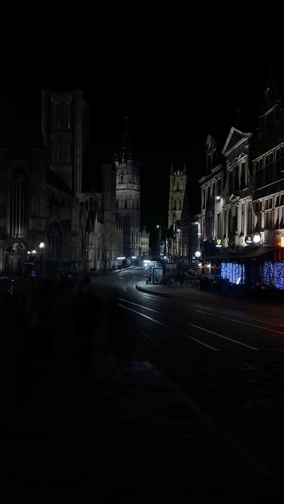
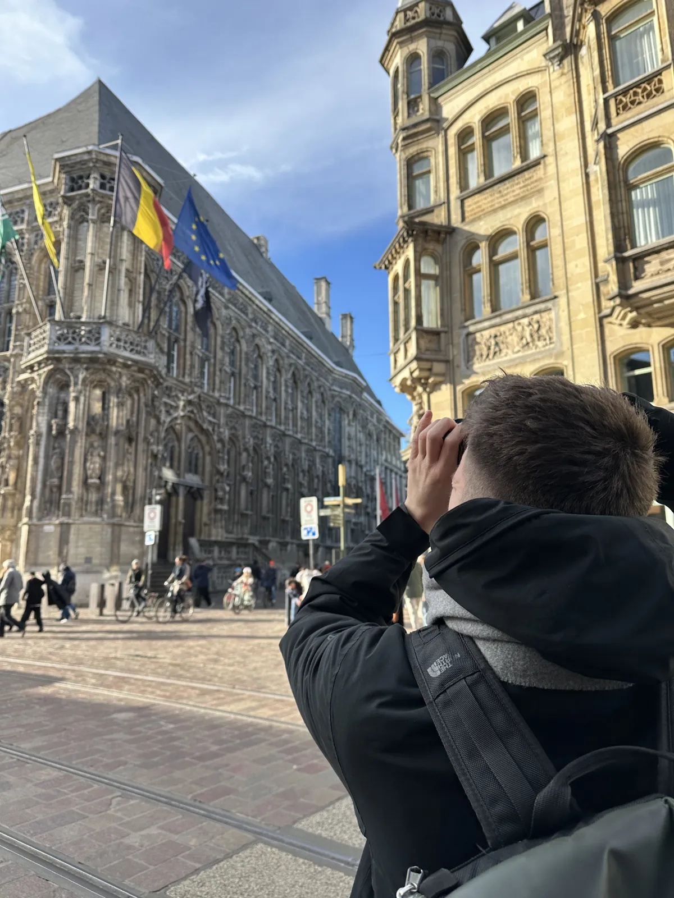
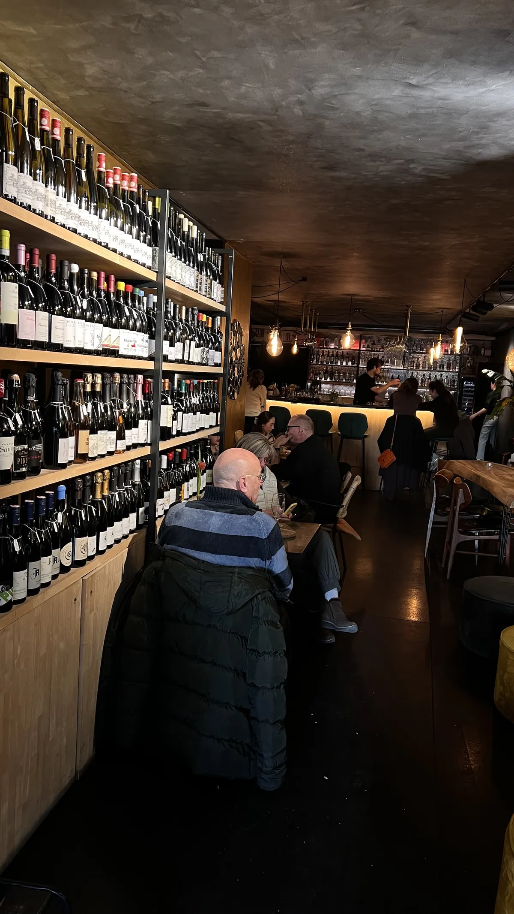
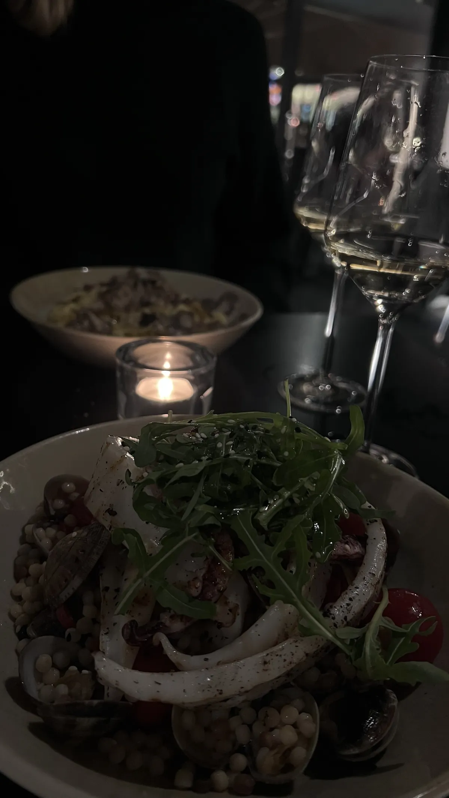

🇧🇪 Ghent Guide: 20 Highlights & Hidden Gems – Graslei, Gravensteen, Graffiti Lane

Table of contents
Everybody knows Bruges. Ghent is far less often on the list – wrongly. The city is compact, walkable and has enough canals, street art and cafés for two full days. Add to that a history far bigger than the city: in the Middle Ages, thanks to the cloth trade, Ghent was one of the largest cities in Europe north of the Alps.
This guide takes you through 20 places – from the big highlights such as the belfry, Gravensteen and the Ghent Altarpiece, via street art and quiet corners, to mustard, genever and beer. For each place you get tips, opening hours and prices, plus how to get there, the City Card and a two-day plan. Prices and times are guidelines (2026).
🗺️ Map: 16 places at a glance
My story in Ghent
I was in Ghent in January 2026. On the very first evening: guild houses reflected in black water, lights on the façades, the quays almost empty. The next day sightseeing boats glide through the canals and the Graslei is full of life. In the Werregarenstraatje an artist with a paint bucket and a red stool stood at the wall and just kept painting – what I photographed probably no longer exists in that form. Add a Belgian waffle with a little flag on top, matcha in a small café near the cathedral and an Aperol on the Korenmarkt in the winter sun. In front of the town hall with its flags I searched for the perfect angle for a long time. In the evening we ended up in a wine bar, later there was seafood by candlelight.


This guide contains affiliate links (GetYourGuide, Omio). If you book through them I earn a small commission – you never pay a cent more. Prices and opening hours change – double-check before you go.
🆓 Free things to do
11 places in Ghent you can enjoy without an entry fee or completely free (for some, only a part costs extra, e.g. a tower or museum):
- St Michael’s Bridge – the three-towers view
- Graslei and Korenlei
- Korenmarkt, St Nicholas’ Church & the old post office
- Town hall (Stadhuis)
- St Bavo’s Cathedral and the Ghent Altarpiece
- Groentenmarkt & Groot Vleeshuis
- Werregarenstraatje – the legal graffiti lane
- St Peter’s Abbey – a calm abbey with an orchard
- Groot Begijnhof Sint-Elisabeth – Ghent’s quiet World Heritage corner
- Patershol – Ghent’s medieval quarter
- St James’ Church & Vrijdagmarkt
At a glance
Getting there and around
By train
The station is Gent-Sint-Pieters. From Brussels the trip takes about 30 minutes, from Bruges about 25. From Brussels Airport trains run direct or with a change at Brussels-Noord, about 50–70 minutes (current timetables at NMBS/SNCB). From Antwerp it is, in my experience, about an hour – ideal for a long weekend with both cities.
In the city
The old town is compact and easy to explore on foot. From the station to the Korenmarkt the tram takes about 5–10 minutes; a single ride costs around €3 and is valid for an hour (De Lijn, card or phone payment possible). Ghent is also a bike city: the centre is flat, and for more distant targets such as the beguinage a rental bike pays off.
Gent City Card
The Gent City Card costs €49 for 48 hours or €55 for 72 hours and is valid from first use. It covers the Gravensteen, the belfry, several museums (including MSK, S.M.A.K., STAM), St Peter’s Abbey and the cathedral’s visitor centre, plus De Lijn trams and buses in the city, one day of bike rental (€40 deposit), a guided boat tour and one day on the water tram. The card is only sold in person (e.g. tourist office, hotels, museums), not online. Calculate against your plan first – the city advertises “save up to €20”, and there is an online calculator.
1. The big highlights of the old town
St Michael’s Bridge – the three-towers view🆓 Free to experience
If you only take one photo in Ghent, make it this one: from the middle of St Michael’s Bridge three towers line up – St Nicholas’ Church, the Belfry and the tower of St Bavo’s Cathedral. In front of them the guild houses of the Graslei and Korenlei are reflected in the River Leie. The bridge is open around the clock.
The present bridge dates from the early 20th century and was built in a historicist style, in time for the 1913 World’s Fair. A crossing at this spot is documented as far back as the Middle Ages. Good to know: depending on construction work, one side of the bridge may be closed and partly block the view.
It is quietest early in the morning (around 7–9 am), when the sun is behind you and lights the fronts of the towers. In the evening the towers are floodlit and mirrored in the water – romantic, but not empty. In July, during the Gentse Feesten, the bridge is extremely crowded from the afternoon on.
Tip: Stand in the middle of the bridge and shoot towards the north-east. With a wide-angle lens – the standard camera on many phones – all three towers fit in. The Graslei is only a few steps from here.
Graslei and Korenlei🆓 Free to experience
The Graslei and Korenlei are the two quays of the River Leie in the middle of the old town, lined with medieval guild houses with stepped gables. In the Middle Ages this was Ghent’s harbour, and merchants and guilds built stately houses along the water.
My first evening in Ghent belonged to the water: the guild houses were reflected in the black water, lights glowed on the façades and the quays were almost empty. The next day everything was different – sightseeing boats glided through the canals and the Graslei was full of life. Both sides are worth seeing, but for photos the evening wins.
Canal tours leave right from the Graslei and Korenlei, take about 40 minutes and cost around €10–11. With the Gent City Card a guided boat tour is included, by the way.
Tip: Come to the Graslei at night on your first evening – the lights on the façades make the best photo. By day it gets crowded; in the evening the quays are much quieter.

Korenmarkt, St Nicholas’ Church & the old post office🆓 Free to experience
The Korenmarkt is where everything in Ghent crosses: trams, bikes, terraces. Gabled houses line the square, and two buildings you can hardly miss stand on its sides – St Nicholas’ Church and next to it the former post office (Oud Postgebouw) in neo-Gothic style, inaugurated in 1913. From here the big sights are all within a few minutes’ walk.
St Nicholas’ Church counts as one of the oldest churches in the city: info it dates from the early 13th century, is built in the “Scheldt Gothic” style and has a tall, massive tower that forms the famous skyline together with the Belfry and the cathedral. It is open daily from about 10 am to 4 pm.
On the Korenmarkt I had an Aperol in the sun even in winter – there are plenty of restaurants and terraces, and in the evening the façades are lit. My videos of the church and the post office were shot on a clear winter day under a deep blue sky.
Tip: If you pass by in the evening: the view down the street with the church and belfry lit up is a classic – especially with the tram tracks in the foreground.


Town hall (Stadhuis)🆓 Free to experience
Ghent’s town hall is a building that never could make up its mind – and is worth seeing precisely for that. The façade on the Hoogpoort is late Gothic with tracery and statue niches (mostly built 1519–1539). Then funding and politics halted the work, and later in the 16th century building continued in Renaissance style: the side facing the Botermarkt, with its classical pilasters and round-arched windows, looks completely different.
In front of the town hall with its flags I searched for the perfect angle for a long time. The best viewpoint is the corner where Hoogpoort and Botermarkt meet – from there you see both styles at once. You can view the façade for free at any time.
The entrance hall is open Monday to Friday, about 8 am–5 pm. The ceremonial rooms inside can only be seen on a guided tour (Gentse Gidsen, group tours from about €115 for two hours – check the price on site). During the Gentse Feesten in July parts of the building are sometimes open free of charge in the afternoons.
Tip: Walk all the way around the building before you take photos. In the morning the light on the Gothic façade is best, and on weekdays before 9 am you are almost alone.


Belfry (Belfort)
At 91 metres, Ghent’s belfry is the tallest in Belgium and part of the UNESCO World Heritage Site “Belfries of Belgium and France”. Construction began in 1313 and ran in several phases; the neo-Gothic spire was only added in the 19th century. A gilded copper dragon crowns the top – a replica; you can see the medieval original in the exhibition inside. The tower holds 54 bells that play automatically on the hour.
You get up partly by lift (it only starts at the first floor) and then by narrow, steep spiral stairs – not suitable for visitors with limited mobility. It is windy on the platform even on warm days, so bring a jacket. Allow 45–90 minutes for the visit.
Admission is around €13 for adults (check the price beforehand); it is open daily about 10 am–6 pm, last entry around 5 pm. It is closed on 24, 25 and 31 December and on 1 January. The belfry is included in the Gent City Card.
Tip: Go right at opening at 10 am: fewer people, better light. In July and August it pays to book online, otherwise you may wait 20–30 minutes.
St Bavo’s Cathedral and the Ghent Altarpiece🆓 Free to experience
St Bavo’s Cathedral holds one of the most important artworks in Europe: the Ghent Altarpiece (“Adoration of the Mystic Lamb”) by the brothers Jan and Hubert van Eyck, completed in 1432. It is among the most stolen artworks in the world; one panel, the “Just Judges”, has been missing since 1934 and a copy hangs in its place. After the major restoration the Lamb turned out to have a surprisingly human face.
The church itself is free to enter; you see the altarpiece in the visitor centre for a fee (about €12.50–16, check the price on site or online). It is best to book online in advance (sintbaafskathedraal.be) to skip the queue. With the Gent City Card there is a one-time €10 discount if you book online and choose the City Card option. The cathedral, visitor centre and altarpiece are wheelchair accessible.
Emperor Charles V was born in Ghent in 1500 and baptised in the church that later became the cathedral. It stands on Sint-Baafsplein right next to the belfry – you can easily visit both on the same morning.
Tip: Many recommend doing the short VR tour in the crypt first – it explains the altarpiece’s history and makes the visit far more rewarding.
Gravensteen – the castle of the counts
In the middle of the city stands a genuine medieval moated castle: the Gravensteen, the castle of the Counts of Flanders. It was built in the 12th century (around 1180 under Count Philip of Alsace), is almost entirely stone and surprisingly well preserved – with ramparts, a knights’ hall and views from the battlements over Ghent’s roofs. Later it was used as a court and a factory, among other things, before being restored.
Admission is €15 for adults, young adults (19–25) pay €7.50 and children up to 12 go in free. The audio guide is included in the ticket – take the longer version, it is worth it.
It is open daily 10 am–6 pm, last entry 4:40 pm; it is closed on Christmas Eve, Christmas Day, New Year’s Eve and New Year’s Day. Booking online is recommended; spontaneous visits work as long as tickets last. With the Gent City Card entry is included – no online reservation needed.
Tip: You do not have to choose a time slot, but booking online is worthwhile in high season. Plan 1.5–2 hours and go early in the day or shortly before closing.
Groentenmarkt & Groot Vleeshuis🆓 Free to experience
Between the Gravensteen and the Graslei lies the Groentenmarkt, the former vegetable market. The square is small, but Ghent specialities line up here: a mustard shop from the 18th century, stalls with the purple sugar cones called “cuberdons” and a genever bar. On the water side stands the Groot Vleeshuis, the great meat hall from the 15th century with a Gothic timber roof.
Inside, hams hang from the roof beams, and there is a shop with regional products and a food offer. The offer changes, so check briefly what is open at the moment. Even without a stop it is worth a look inside.
Tip: Plan the Groentenmarkt as a stop between the Gravensteen and the Graslei – three Ghent specialities (mustard, cuberdons, genever) are within a few metres of each other here.
2. Street art, abbey & quiet corners
Werregarenstraatje – the legal graffiti lane💎 Hidden gem🆓 Free to experience
Ghent’s legal graffiti lane: spraying is allowed here, which is why the walls look different almost every week. When I was there an artist with a paint bucket and a red stool stood at the wall and simply kept painting. What I photographed probably no longer exists in that form – one more reason to capture everything right away.
The lane is narrow, colourful to the last crack and surprisingly calm even though it is right in the centre. In the middle of the lane there is a small café and a chocolate shop (“craft chocolate from bean to bar”, as the sign says).
It is a place for photos, but also for watching: when sprayers are at work you see a piece emerge layer by layer – and sometimes it is painted over the next day. That is intended, and exactly what makes it appealing.
Tip: Come by day when artists are working – then you see the walls emerging. The motif changes constantly, so photograph everything right away. Ask sprayers briefly before photographing them from the front.


St Peter’s Abbey – a calm abbey with an orchard💎 Hidden gem🆓 Free to experience
While everybody heads for the belfry, St Peter’s Abbey is far less visited – yet it is one of the most atmospheric places in the city. The abbey goes back to the 7th century; the large Baroque church and the cloister courtyards feel “like Hogwarts”,.
The church and gardens are free to enter. The gardens include an orchard and a small vineyard – you can often help yourself to apples, pears and figs; ask briefly what is currently allowed. The rooms host changing exhibitions; they are included in the Gent City Card.
The abbey lies south of the old town, between the old town and Gent-Sint-Pieters station, so it is right on your way. It is open Tuesday to Sunday 10 am–6 pm, closed on Mondays.
Tip: Plan the abbey as a stop when arriving or leaving – it lies on the route between station and centre and is one of the calmest places in the city.
Groot Begijnhof Sint-Elisabeth – Ghent’s quiet World Heritage corner💎 Hidden gem🆓 Free to experience
A béguinage is a closed settlement for beguines – single women who lived together as a Catholic community, took no vows and supported themselves. The Groot Begijnhof Sint-Elisabeth in Sint-Amandsberg is one of two Ghent beguinages on the UNESCO World Heritage list and the opposite of the old town: red doors, courtyards, lawns, a church in the middle and hardly anyone else.
The complex was built astonishingly fast: in 1873–1874 around 600 workers erected 80 houses, 14 convents, a main house, an infirmary, a chapel and the church in under two years. About 600 beguines lived here at the time. Entry is free; the gate on Engelbert van Arenbergstraat is open daily about 6 am–11 pm, the gate on Jan Roomsstraat (pedestrians and cyclists only) 6 am–9:30 pm.
The beguinage lies just under 2 km east of the old town – about 10 minutes by bike, and doable by bus or tram (check the current connection in the De Lijn app). On the second and fourth Sunday of the month there are guided walks; register via the beguinage’s website.
Tip: Perfect for a quiet morning when you have had enough of the crowds in the old town. Rent a bike (one day is included with the City Card) and combine it with a café stop on the way back.
Patershol – Ghent’s medieval quarter🆓 Free to experience
Patershol is Ghent’s oldest surviving residential quarter: a tangle of cobbled lanes, low houses and small squares directly behind the Gravensteen. Today it is mostly restaurants, well filled in the evening – ideal for your first night in the city.
On almost every menu you find waterzooi, the Ghent stew: vegetables in a broth with cream and egg yolk, originally made with river fish, now mostly with chicken. Also typical is stoverij, a beef stew with beer and onions, served with fries and – classically – a little Tierenteyn mustard. Good addresses for waterzooi include ’t Klokhuys and Du Progres.
By day Patershol is calm and almost sleepy. That is exactly the appeal: you are only a few steps from the main sights, but the bustle stays outside.
Tip: Reserve ahead at weekends, the good restaurants fill up quickly. Try waterzooi once and stoverij once – then you have had both typical Ghent dishes.
St James’ Church & Vrijdagmarkt🆓 Free to experience
St James’ Church is one of the oldest churches in the area; its oldest parts date from the 12th century. It is quiet and far less visited than the cathedral – a calm stop. It is open Tuesday to Sunday 2–6 pm, closed on Mondays.
Next door lies the Vrijdagmarkt, the great “Friday market”, for centuries the square for markets, assemblies and festivals. In the middle stands the monument to Jacob van Artevelde, the 14th-century Ghent leader. Around it are cafés, bars and the pub Dulle Griet.
3. Food, drink & souvenirs
Belgian waffle & cuberdons
Of course there was a Belgian waffle – with a little flag on top. The classic snack for in between, best warm and freshly baked, plain, with powdered sugar or with chocolate and fruit.
Ghent’s second sweet speciality are cuberdons, also called “neuzekes” (“little noses”): purple, cone-shaped candies with a thin sugar crust and liquid raspberry syrup inside. You can get them at the stalls on the Groentenmarkt and in several shops. They exist only in Belgium because the syrup crystallises after a few weeks – so take them as a souvenir, but eat them soon.
Tip: Buy cuberdons fresh and eat them within a few days; as a souvenir they only suit short trips.
Tierenteyn-Verlent – Ghent mustard since 1790💎 Hidden gem
Behind an unassuming façade at Groentenmarkt 3 lies one of the oldest shops in the city: Tierenteyn-Verlent has made Ghent mustard since 1790. The mustard is made in the cellar and filled into your jar fresh from a wooden barrel in the shop; the interior dates from the 19th century.
The mustard is strong and sharp and is traditionally used in the Ghent beef stew (stoverij). Small pots start at about €2.50, ideal as a souvenir (with a wooden spoon as a set). It is open Monday 1–6 pm, Tuesday to Saturday 10 am–6 pm, closed on Sundays.
Tip: Take a small pot; it fits well in a shoe or the edge of a suitcase. The shop is small and often busy – best right after opening or shortly before closing.
Matcha café near the cathedral & colourful design shop
Between the sights you need breaks. Mine was a small café near the cathedral with a matcha latte at a window seat, with a biscuit on the saucer – nicely quiet, with a view of the street. Then came a colourful design shop full of hand-painted ceramics: mugs with phrases like “La vie est belle” and “Amour toujours”, vases with swirling patterns, postcards and small pieces of jewellery.
For me it was the perfect balance after the Gravensteen and the belfry: first art, then a café, then a bit of kitsch – in the best sense. If you are looking for souvenirs that do not look like they came from a souvenir shop, you are in the right place.
Tip: Take a window seat if one is free – you watch the passers-by and can put your feet up.


Dinner: wine bar and seafood
In the evening we ended up in a small wine bar: shelves of wine up to the ceiling, dim light, dark walls, a bar with warm light at the back. It was full but cosy – a place where you sit longer than planned. For dinner there was later seafood with fregola (small toasted pasta), clams, grilled squid and rocket, with white wine by candlelight. Next to it a pasta with mushrooms.
The nice thing about Ghent: even in January, when the days are short, there is plenty to do in the evening. The old town is small enough that after dinner you stroll to the Graslei or the Korenmarkt and catch the floodlit façades on the way.
Tip: Reserve at weekends; a night walk to the Graslei rounds off the evening perfectly.


’t Dreupelkot – genever in over 200 flavours💎 Hidden gem
If you want to try genever (jenever, the Flemish juniper spirit), ’t Dreupelkot at Groentenmarkt 12 is the address: about 215 flavours, around 50 of them infused in-house – honey, caramel, citrus and much more. The bar is inexpensive.
The tradition: the glass is poured to the brim and you take the first sip straight at the bar so nothing is spilled. It is open daily from 4 pm until about 1 am (Friday/Saturday until 2 am). Inside a historic interior (smoking is allowed too), outside seats by the water.
Tip: Ask for a taste before ordering and start with a mild flavour such as honey or caramel.
Dulle Griet – 1.5 litres of beer in a boot
A pub on the Vrijdagmarkt with well over 500 beers. Famous is the 1.5-litre beer in a boot: you leave a shoe as a deposit, which then hangs from the ceiling. Belgian beer culture is, by the way, UNESCO intangible cultural heritage.
It is open Monday from 4:30 pm, Tuesday to Saturday from noon until about 1 am and Sunday noon–7:30 pm. Wear a pair of shoes you can part with that evening.
Tip: Wear a pair of shoes you can part with that evening.
Stadsbrouwerij Gruut – beer with herbs instead of hops💎 Hidden gem
Ghent has its own city brewery: Gruut brews with medieval herbs (“gruut”) instead of hops. The result tastes soft, aromatic and slightly spicy. A well-known beer is the Inferno, a strong (9%) blond triple.
The taproom lies slightly outside the old town (Rembert Dodoensdreef 1), so it is more a destination for an afternoon than a quick stop. It is open Mon–Thu and Sun 2–7 pm, Fri and Sat 2–9 pm.
Tip: Come in the afternoon and try a beer that does not taste of classic hops – for beer fans an interesting counterpoint to the Dulle Griet.
And Antwerp?
Antwerp is bigger and livelier: the Grote Markt with the Brabo fountain, magnificent guild houses, lots of fashion, lots of pace. By train the two cities are only about an hour apart – perfect for a long weekend. Antwerp has been the world capital of the diamond trade for centuries.
Where to stay
- Old town (Korenmarkt, Graslei): in the thick of things, everything on foot – loud in the evening.
- Patershol: quieter, cobblestones and restaurants.
- Near Gent-Sint-Pieters station: often cheaper, in the centre by tram in 5–10 minutes, and St Peter’s Abbey is conveniently on the way.
Tip: if you only stay briefly, sleep in the old town – you save on walking and can see the Graslei late at night. During the Gentse Feesten in July accommodation books out quickly; book early then.
What makes Belgium special
Three languages, what feels like a thousand beers, fries, waffles and comics: Tintin comes from here. And a calm with which you sit outside even in drizzle. Belgium has only existed since 1830.
My conclusion: Ghent is ideal for a weekend: compact, walkable, with enough street art, churches, castle and cafés for two full days. Bruges is still on my list.
📍 Save this guide to Google Maps
1. Quick: open as a route
2. Permanent: as your own map (2 minutes)
- Download the file with all pins (KML button below).
- Open Google My Maps → “Create a new map” → “Import” → choose the file.
- Done – every place sits exactly where it should, with number, tip and a link back to the guide.
- In the Google Maps app the map appears under “Saved” → “Maps”, also on the go.
⬇️ All pins for Google Maps (KML) ⬇️ Download place list (CSV)
3. Save one by one
Your plan
Day 1: Day 1 – Old town, towers & castle
- Morning – St Michael’s Bridge (three-towers view), town hall, belfry (at opening at 10 am)
- Midday – St Bavo’s Cathedral with the Ghent Altarpiece (book online), matcha break and design shop
- Afternoon – Groentenmarkt (mustard, cuberdons), Gravensteen with audio guide
- Evening – dinner in Patershol or a wine bar, then the Graslei and Korenlei at night
Day 2: Day 2 – Street art, abbey & water
- Morning – Werregarenstraatje: watch the artists spray; then St Peter’s Abbey with its orchard
- Midday – Vrijdagmarkt, St James’ Church, lunch
- Afternoon – canal boat tour from the Graslei, Aperol on the Korenmarkt; optionally cycle to the Groot Begijnhof
- Evening – ’t Dreupelkot and Dulle Griet, or Gruut beer in the afternoon; optionally a train to Antwerp the next day
FAQ
How many days do you need in Ghent?
Two days are enough: the old town is compact, and you can easily fit in the three-towers view, belfry, Gravensteen, cathedral, street art and food. If you want to add the beguinage, the abbey and Gruut, plan a third half day.
Ghent or Bruges?
Everybody knows Bruges, Ghent is far less often on the list – wrongly, in Noel’s experience. By train the two are only about 25 minutes apart, so you can combine them.
Is the Gent City Card worth it?
It costs €49 (48 hours) or €55 (72 hours) and includes the Gravensteen, belfry, several museums, trams and buses, a boat tour and one day of bike rental. Calculate against your plan; if you only visit the Gravensteen and the belfry, it is probably not for you. The city advertises “save up to €20”; there is a calculator on visit.gent.be.
Can you visit Ghent in winter?
Yes, Noel was there in January: the quays were almost empty in the evening, and on the Korenmarkt you could even sit in the winter sun with an Aperol. Dress warmly and expect short days.
How do I get to Ghent?
By train to Gent-Sint-Pieters: from Brussels in about 30 minutes, from Bruges about 25, from Antwerp roughly an hour. Check timetables at NMBS/SNCB or Omio.
Where is the best photo spot in Ghent?
St Michael’s Bridge: from the middle you see St Nicholas’ Church, the belfry and the cathedral tower in one line, with the Graslei and Korenlei in front. Early in the morning it is empty and the sun lights the towers; in the evening they are floodlit. For street-art photos try the Werregarenstraatje.
When are the Gentse Feesten?
The big city festival takes place every July and lasts ten days. Then the old town is extremely crowded from the afternoon and accommodation is scarce – please check the dates on the official site.
Is the Ghent Altarpiece worth the entry fee?
Yes, if you are interested in art: it is one of the most important paintings in Europe (1432). The VR tour in the crypt and an online booking make the visit far more relaxed. The cathedral itself is free.
🗺️ All places on my map → More guides and reels on Instagram: @hiddengem.atlas
Share this guide: On WhatsApp